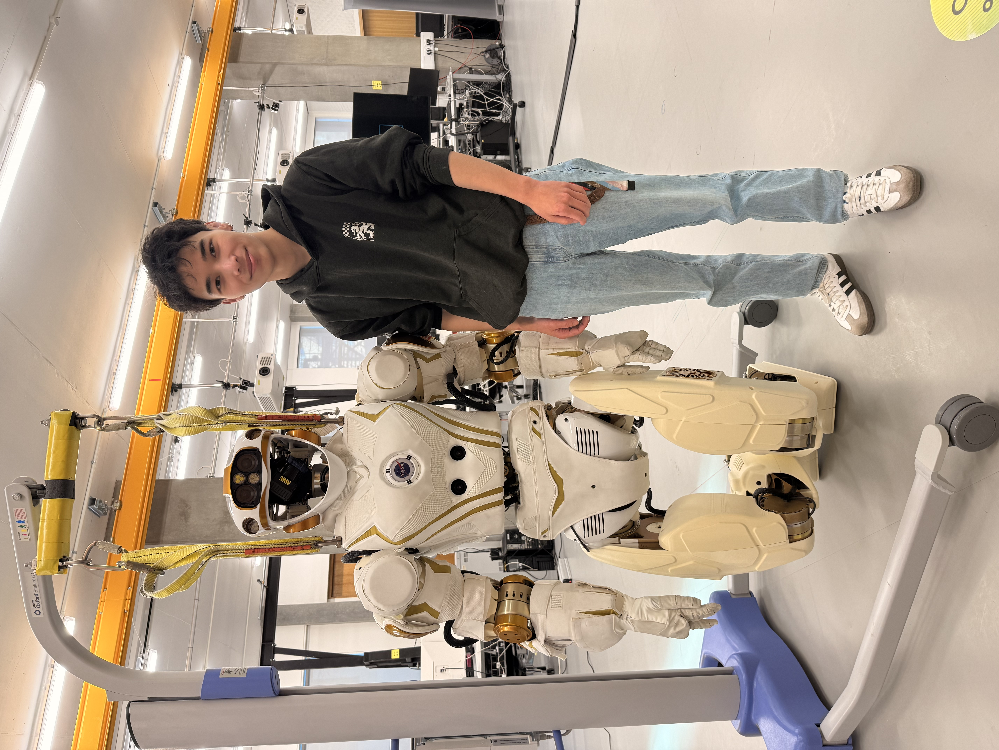
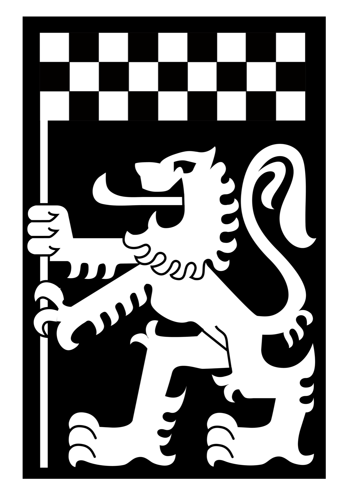
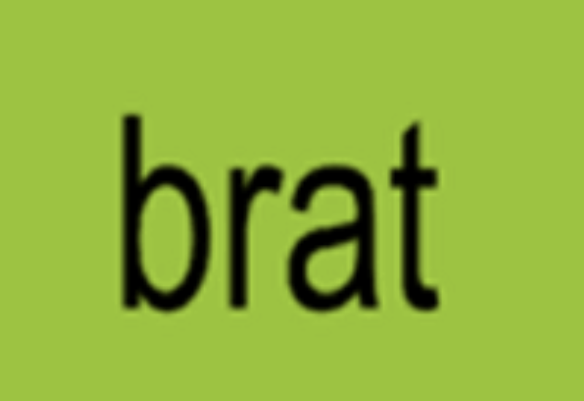

Contact me
I'm always happy to talk about robotics, research or opportunities. Feel free to get in touch.

I'm an MSc Robotics student at the University of Manchester. Before that, I graduated from the University of Edinburgh with a First Class BSc in Artificial Intelligence & Computer Science, where my dissertation looked at the Sim2Real gap in reinforcement learning for contact-rich robotic manipulation. For four years I was a software developer on Edinburgh University Formula Student's autonomous driving team, which won the AI division at Formula Student UK three years in a row.
View my CV

Trained reinforcement learning agents for non-prehensile manipulation in MuJoCo and Isaac Sim, and built pipelines for training across multiple simulators. The research looks at how the structure of the dynamics model affects Sim2Real transfer.
An MCP server that exposes a gym-like API as skills, so LLM agents can interact with physics simulations.
A natural-language interface for querying databases, connecting an LLM to PostgreSQL through an MCP server.
A Q-learning agent for path planning in 2D grid worlds, with reward shaping and epsilon-greedy exploration.
A Raspberry Pi system with soil-moisture sensors and an electric valve. A script triggers watering whenever moisture drops below a configurable threshold.
A REST API that handles requests for a drone delivery application.
I'm always happy to talk about robotics, research or opportunities. Feel free to get in touch.